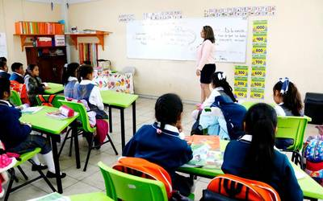
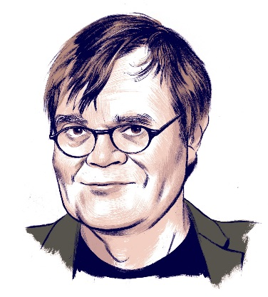

Te damos la bienvenida a nuestra página web “Eduk-Luk@” esperando que el material que compartimos sea de su completo agrado.
En nuestra página encontraras material didáctico que les servirán a los docentes y al padre de familia para que puedan apoyar a sus hijos en educación primaria ya que por este momento la página solo está enfocada a este nivel, posteriormente se estará actualizando el contenido agregando más grados y materias ya que por el momento estamos empezando y lo que queremos es ayudar a los estudiantes
.

Esperamos que los contenidos les gusten mucho a ustedes y a sus alumnos recordando que nosotros únicamente lo compartimos con fines informativos y educativos en nuestra labor como agentes de la educación.
En este marco de innovación y cambio, la opción de generar entornos virtuales de aprendizaje basados en las Tecnologías de la información y la Comunicación (TIC), supone responder de forma integral a los requerimientos que impone la Sociedad del Conocimiento y a las nuevas necesidades del entorno educativo.
Con el uso de las aulas virtuales o plataformas educativas buscamos que Internet nos sirva también como una vía de intercomunicación con otros miembros de la
comunidad escolar, como un banco de recursos específicos de un área o asignatura, como un lugar común donde trabajar colaborativamente o desde el que plantear actividades de enseñanza y aprendizaje variadas que extiendan el aula más allá de su dimensión física.
La primera experiencia que muchos centros han tenido en el uso de herramientas en la Web ha sido la elaboración de su página web con el objeto de tener presencia en Internet, dar a conocer su oferta educativa y de servicios y mantener informada a la comunidad escolar y al público en general sobre lo que se está realizando.
No olvides compartir nuestra página y seguirnos en Facebook para más contenido educativo ?? Eduk Luka.
¡Gracias por tu visita!

"Un maestro es una brújula que activa los imanes de la curiosidad, el conocimiento y la sabiduría en los alumnos"